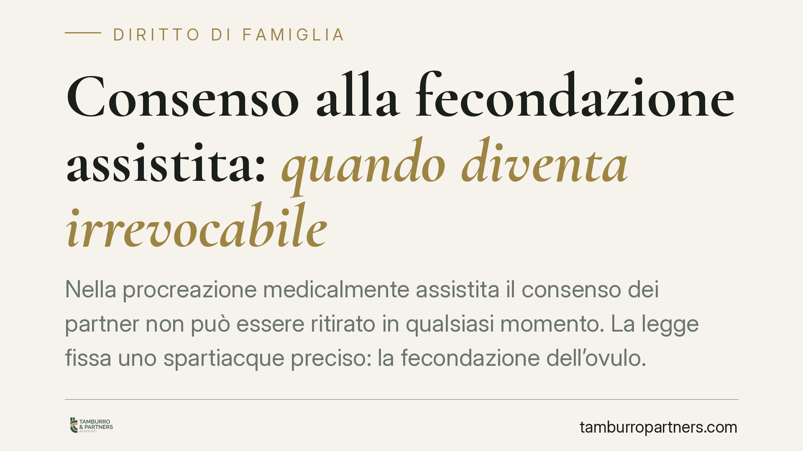

Consenso alla fecondazione assistita: quando diventa irrevocabile
Nella procreazione medicalmente assistita il consenso dei partner non può essere ritirato in qualsiasi momento. La legge fissa uno spartiacque preciso: la fecondazione dell'ovulo. Superata quella soglia, il padre non può più revocare il consenso né disconoscere il nato. Un tema che intreccia autodeterminazione, tutela del concepito e stabilità del rapporto di filiazione.

Il caso e il principio
Una delle domande ricorrenti in materia di procreazione medicalmente assistita (PMA) riguarda la possibilità di tornare indietro. Il partner che ha prestato il proprio consenso può ritirarlo? E fino a quando?
La risposta è netta ma condizionata a un fattore temporale. Il consenso è revocabile solo entro un momento preciso del percorso. Dopo, prevale la tutela dell'embrione e del rapporto di filiazione che ne deriva.
Si tratta di un orientamento consolidato nella giurisprudenza di legittimità, coerente con la lettera della legge. In assenza di un riferimento univoco a una singola pronuncia, è corretto parlarne come principio ricavabile direttamente dal dato normativo e dalla sua interpretazione ormai stabilizzata.
Inquadramento normativo
La disciplina è contenuta nella Legge 19 febbraio 2004, n. 40.
L'art. 6, comma 3 stabilisce che la volontà espressa dai soggetti può essere revocata da ciascuno di essi fino al momento della fecondazione dell'ovulo. È questo lo spartiacque temporale: prima della fecondazione il ripensamento è pienamente legittimo; una volta che l'ovulo è stato fecondato, il consenso diventa irrevocabile.
La ratio è chiara. Fino alla fecondazione si è ancora nella sfera dell'autodeterminazione dei partner. Dopo, entra in gioco un interesse ulteriore, quello legato all'embrione formatosi, che il legislatore ha scelto di tutelare in via prioritaria.
L'art. 9 completa il quadro sul versante dello status del nato. Chi ha acconsentito alla PMA non può esercitare l'azione di disconoscimento della paternità né l'impugnazione del riconoscimento per difetto di veridicità. La norma assume rilievo centrale soprattutto nella PMA eterologa (con gamete di donatore), dove il nato non ha legame genetico con il padre di intenzione: proprio qui il divieto serve a garantire stabilità al rapporto di filiazione. Nella PMA omologa (gameti della coppia) il legame genetico sussiste e la questione del disconoscimento si pone in termini diversi, ma il principio di irrevocabilità del consenso resta fermo.
Il bilanciamento costituzionale
La materia è stata più volte al vaglio della Corte costituzionale. Con la sentenza n. 162/2014 la Consulta ha dichiarato illegittimo il divieto assoluto di fecondazione eterologa per le coppie con patologie di sterilità o infertilità irreversibili, aprendo a questa tecnica. Con la sentenza n. 96/2015 ha inciso sull'accesso alla PMA per le coppie fertili portatrici di malattie genetiche trasmissibili, in relazione alla diagnosi preimpianto.
Da queste pronunce emerge la logica di fondo: l'autodeterminazione dei genitori non è illimitata. Il legislatore, e con esso il giudice delle leggi, opera un bilanciamento tra libertà di scelta, tutela della salute e protezione del concepito. La irrevocabilità del consenso dopo la fecondazione è una delle sedi in cui questo bilanciamento si traduce in regola operativa.
Implicazioni pratiche
Per la coppia che intraprende un percorso di PMA le conseguenze sono concrete.
La decisione va ponderata prima dell'avvio del trattamento, perché la finestra utile per il ripensamento si chiude con la fecondazione dell'ovulo. Non esiste, dopo quel momento, una via ordinaria per sottrarsi agli effetti giuridici della scelta.
Per il padre di intenzione nella PMA eterologa la conseguenza più rilevante è l'impossibilità di disconoscere il nato: il rapporto di filiazione è stabile e opponibile, a prescindere dall'assenza di legame genetico. È un dato da comprendere pienamente prima di prestare il consenso.
Cosa fare in concreto
- Leggere con attenzione il modulo di consenso informato prima di sottoscriverlo, verificando che riporti la disciplina della revoca ex art. 6 L. 40/2004.
- Chiarire con la struttura sanitaria il momento tecnico esatto in cui avverrà la fecondazione, poiché coincide con il termine ultimo per revocare.
- Distinguere la propria posizione a seconda che si tratti di PMA omologa o eterologa: gli effetti sullo status del nato non sono identici.
- Documentare per iscritto ogni comunicazione con il centro, conservando copia del consenso prestato e delle relative date.
- In caso di dubbi sugli effetti giuridici della scelta, è opportuno acquisire un chiarimento tecnico prima e non dopo l'inizio del trattamento.
Disclaimer
Contributo informativo a cura di Tamburro & Partners - Avv. Giuseppe Tamburro. Non costituisce parere legale.
Ogni famiglia ha il suo equilibrio.
Separazione, divorzio, affidamento, assegno: se vuoi un confronto riservato su una specifica situazione, scrivi allo studio. Ti rispondiamo entro un giorno lavorativo.